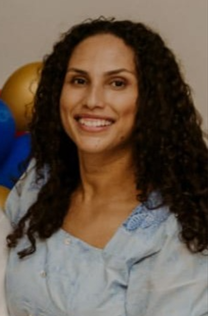

Denise Cristina Olivo Dumont
Criativa e detalhista, Denise contribuiu com o layout visual e a identidade do site. Tem interesse em desenvolvimento front-end e busca sempre entregar experiências agradáveis ao usuário.
Christian Dumont
Estudante dedicado e apaixonado por tecnologia, responsável pela estruturação do projeto e organização dos conteúdos. Atua com HTML5 e CSS focando em acessibilidade.